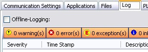
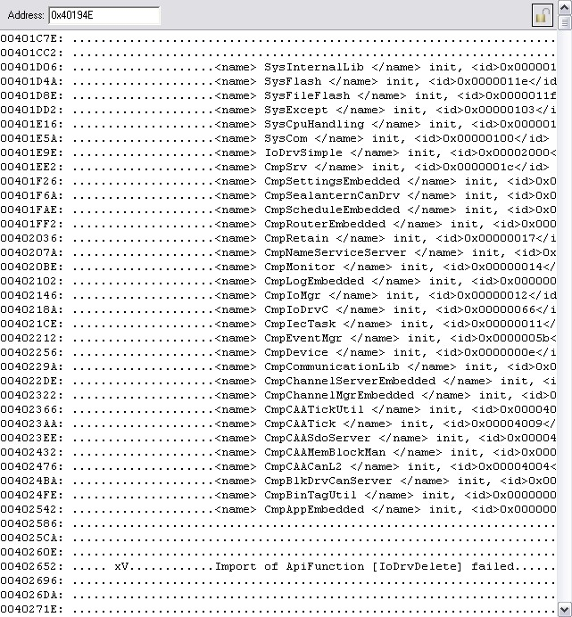

Debugging¶
Check the log messages¶
You should have the component CmpLogEmbedded in your runtime. This component is used by other components as well as your IEC application to collect all kinds of debug, info and error messages. There are three ways to see those logs:
- Logger page:Double click on your device, switch to the “Log”-tab and press the update button.Note, that this only works if your communication with the runtime works.
- Serial Terminal:If you have a spare serial port, you can add and implement the component “SysOut” to output the messages to your serial port.
- Debugger:If you don’t have a spare serial port nor a working communication, you can use your debugger:Find out the address of the symbol “s_StdLogEntries” and add this address to the memory window of your debugger. If you adjust the number of displayed entries per line to LOG_MAX_INFO_LEN+20, you can see a readable log, like this:
Device doesn’t appear in the scan¶
Before we start debugging the problem. We should check our configuration:
Gateway.cfg (check the configuration of your COM port, as described in 2.1.5.6.
Restart your Gateway (using the systray icon
 )
and check if it sends s.th. on the serial port when you press the
“Scan network” button. You can check the traffic with the tool
“portmon” from sysinternals.
)
and check if it sends s.th. on the serial port when you press the
“Scan network” button. You can check the traffic with the tool
“portmon” from sysinternals.Check your configuration in “sysdefines.h”. Check if you are using the correct device and the correct baudrate.
Check if your driver supports the configured baudrate and if you are using the correct serial port.
Before we are debugging the driver on the Runtime side, we should start monitoring the packets, which are sent over the bus. Please start “portmon” from sysinternals, stop the CODESYS Gateway and connect portmon to your serial port. After a restart of the Gateway you should already see some packets on the bus. That means, that your host is configured correctly.
If your serial driver is working (which we assume here), then it’s only possible, that one of the components is not configured correctly and discards the packet. In the case of a device scan, we are talking directly to the component CmpDevice. So we should check with breakpoints in various positions if the packet came through:
- SysComMyPlat.c: SysComOpen()Step through this function and check if the correct port is opened and if you configured the hardware correctly.
- CmpRouter.c: HandleLocally()Set a breakpoint into the „default“ branch and check in s_protocolHandler[] if the handler, which we try to call is registered there.If you see that the handler for the scan request is not registered, you should check if CmpDevice is configured into your runtime and if it is loaded correctly. If you can’t find the reason in the configuration, you should try to debug through the init code of CmpDevice. Just set a breakpoint into CmpDevice.c: ComponentEntry() to see if the component is loaded and configured.
- CmpDeviceSrv.c: DeviceServiceHandler() If the scan request is already this far, everything looks fine for the request and you will need to debug the response path. There is no other way than stepping through the whole response path and have a look on all error conditions. You need to find out, why the request was accepted but the response was never sent.
Unable to download but no exception¶
If you are using the CmpAppEmbedded and you are not able to login, you most likely miss a setting in your device description to enable the compact download, which is used by CmpAppEmbedded >= V3.4.1.0. This is an optimization, which is done for small embedded devices and changes the download format.
<DeviceDescription>
<Device>
<ExtendedSettings>
<ts:TargetSettings>
<ts:section name=”runtime_features”>
<ts:setting name=”compact_download” type=”boolean” access=”visible”
xmlns:ts=”http://www.3s-software.com/schemas/TargetSettings-0.1.xsd”><ts:value>1</ts:value></ts:setting>
Note: This setting has no influence on the format of your bootproject.
Exception at download¶
Your device already appears in the scan and you are able to perform a login. For the first test, you should create an empty application and try to download this.
When you log in for the first time you should get a pop up dialog that informs you that no application is on the device and asks you if you want to perform a download. If this doesn’t appear, your communication is not working, yet and you should have a look into section 2.3.2.
If you get an exception at download, this exception will most likely appear within our generated init code. But anyway this may have a few different causes:
- Compiler Settings:First of all, you should double check your compiler settings in your device descriptions. These should exactly match your device. Take care about CPU, C-Compiler specific settings (only necessary on some architectures), FPU.
- Memory Layout:Check that the areas that are allocated in SysMemMyPlat.c are really free and correctly allocated. Check how they match to the areas of your device description.Note: If you make an “update device” deleted areas may still exist in your project. So please create a new project or add a new PLC to your project if you changed the number of areas in your device description!
- SysCpuCallIECFuncWithParamsCheck if your implementation of SysCpuCallIECFuncWithParams() works as expected.
To debug this problem, you should start in the function AppRunAfterDownloadCode() of CmpApp or CmpAppEmbedded. Set a breakpoint to this function and try to log in into your device. We assume that you hit this breakpoint before the actual exception.
Step through this function and check where it crashes. Most likely it will crash in one of the calls to SysCpuCallIECFuncWithParams. Depending on that we have the following possible error causes:
pfReloc:
- SysCpuCallIECFuncWithParams() crashes already when trying to call the function pointer:On a 16 Bit platform you should check the width of the function pointer. On all other systems you have most likely a wrong area offset specified, or your implementation of SysCpuCallIECFuncWithParams() is not working.
- The call crashes somewhere in the IEC code:That means that the parameters which you passed to the function over the stack, where not correct, that you have the wrong compiler settings (FPU, Compiler Type, Architecture,…) or that the memory area that you returned in SysMemAllocArea() was wrong.
On architectures with segmented memory, you should check the settings “code-segment-size” and “data-segment-size” in the “memory-layout” of your device description.
pfCodeInit
pfGlobalInit
pfDownloadPOU
Check if this function is called and check if the function pointer is valid.
This function is called over an indirection of the function call table of our IEC application. So maybe there was already a fault in pfGlobalInit where this table is setted up.
If you can’t find the issue by your own, you should send the following information to your first level support contact at 3S – Smart Software Solutions:
- Call Stack:At least you need to find out the position, where the exception occurred. Also determine the kind of exception and maybe why it occurred (e.g. TLB load exception because of a NULL pointer access).
- Device Description:You can send either your device description XML file or create a project archive out of CODESYS.
- Memory Layout:Describe where your memory areas are allocated. It’s important to know if you have fix addresses for your memory areas or if you allocate them dynamically.
- Code Snippets:It will be much of help if you add your implementation of SysCpuCallIECFuncWithParams() to your support request.
Communication Timeout after a few seconds/minutes¶
The communication timeout is calculated based on the time returned by SysTimeGetMs(). So when you get a timeout after some time, it is most likely because of a wrong calculation there. A very common error would be that you have too early wrap around in the timer value.
Abbroach to solve this:
- Temporarily set the implementation of SysTimeGetMs() to this:static unsigned long s_ulTimeMs;unsigned long CDECL SysTimeGetMs(void){return s_ulTimeMs++;}
Try to implement SysTimeGetUs() correctly.
- Create a small test project like this:
PROGRAM PLC_PRG VAR us: SYSTIME; res: UDINT; last_us: ULINT; start_us: ULINT; error: BOOL; END_VAR res := SysTimeGetUs(pUsTime := start_us); res := SysTimeGetUs(pUsTime := us); WHILE (us – start_us) < 500 DO res := SysTimeGetUs(pUsTime := us); IF us < last_us THEN error := TRUE; END_IF last_us := us; END_WHILE Verify your implementation of SysTimeGetUs() with the project above:
The time, returned by SysTimeGetUs() should be continuously growing until it wraps around at the boundary of the RTS_SYSTIME datatype.
Check with an external clock if the time base of SysTimeGetUs() is correct.
Make SysTimeGetMs() behave similar to your SysTimeGetUs() implementation.
Make sure that your intermediate values within your calculation don’t exceed the boundary of the RTS_SYSTIME data type.
Another error source is the serial block driver. This might have problems with some combinations of buffer sizes. So check the following definitions in sysdefines.h:
BLKDRVCOM_MAX_SER_READSIZE: Maximum number of bytes that are read with one call of SysComRead. Recommended values are 1..1024.
NETSERVER_BUFFERSIZE: Keep this value above 1024
Other Errors¶
Here are a few things which you need to check if you couldn’t find a hint for your problem in the sections above:
- Memory allocation at startup failed:Set a breakpoint in SysMemAllocData() and start the runtime system. You should not hit this breakpoint. If you hit it anyway, you should check why, and try to solve it.Known symptoms:
Application download just hangs in keep-alive ping pongs and doesn’t respond anymore.
The device doesn’t appear in the scan anymore.